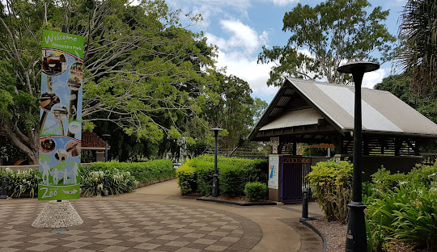

News
Can Bundaberg Pressure Cleaning clean commercial properties?
How do I find out more about Bundaberg Pressure Cleaning services?
What factors determine the pricing for pressure cleaning?
What training do technicians at Bundaberg Pressure Cleaning undergo?
More
How does pressure cleaning benefit the environment?
What are the signs that my exterior needs pressure cleaning?
How can pressure cleaning improve my home's energy efficiency?
What cleaning methods does Bundaberg Pressure Cleaning use for roofs?
How does Bundaberg Pressure Cleaning ensure thorough cleaning?
What are the signs that my driveway needs pressure washing?
How does Bundaberg Pressure Cleaning approach deck cleaning?
What training do Bundaberg Pressure Cleaning staff undergo?
Can pressure cleaning damage my home’s surfaces?
What is the difference between pressure washing and soft washing?
Why is tennis court cleaning important for player safety?
What areas does Bundaberg Pressure Cleaning service?
How can I ensure my gutters are not blocked?
What types of roofs does Bundaberg Pressure Cleaning clean?
Why should I choose Bundaberg Pressure Cleaning for my exterior cleaning needs?
What is the process for booking a cleaning service?
How does Bundaberg Pressure Cleaning handle tough stains?
What is the best time of year to schedule pressure cleaning?
What are the benefits of keeping solar panels clean?
How does pressure cleaning prevent damage to my property?
About Us
Contact Us
Bundaberg Pressure Cleaning
Bundaberg: A Vibrant Hub of History, Agriculture, and Tourism in Queensland
Nestled in the Wide Bay region of Queensland, Bundaberg boasts a rich cultural heritage, a booming agricultural sector, and stunning natural attractions. Known for its sugarcane production and the iconic Bundaberg Rum, the city is a dynamic center for both residents and tourists.
Bundaberg: Exploring the Geographic and Cultural Significance of Queensland’s Unique City
Located in Queensland, Bundaberg is not only a vital agricultural hub but also a city rich in cultural history. Its name reflects local heritage, while Bourbong Street showcases intriguing stories from the past.
The History of Bundaberg: A Journey from Traditional Lands to British Colonization
Bundaberg’s history is deeply rooted in its Aboriginal heritage, shaped by the traditional ownership of the Taribelang, Gooreng Gooreng, Gurang, and Bailai peoples, and marked by the impacts of British colonization beginning in the 1840s.
The Rise of Bundaberg: Cattle, Logging, and the Establishment of a Thriving Town
Bundaberg's development was significantly influenced by cattle ranching and timber logging, transforming the landscape and paving the way for the establishment of the town.
The Sugar Boom and the Evolution of Bundaberg
From early timber exploitation to becoming a major sugar production hub, Bundaberg's development was shaped by agricultural innovation, labor issues, and community resilience.
Bundaberg in the 21st Century
The 21st century has brought significant challenges to Bundaberg, particularly due to natural disasters. In December 2010, the region faced its worst floods in 60 years, as the Burnett River overflowed, inundating hundreds of homes and displacing many residents. This catastrophic event highlighted the town's vulnerability to severe weather conditions.

Bundaberg Demographics and Heritage: A Snapshot of Growth and Cultural Significance
The city of Bundaberg, boasting a diverse population of over 73,000, reflects a rich tapestry of cultures and a commitment to preserving its historical heritage through various significant sites.
Bundaberg’s Climate: A Year-Round Guide to Weather Patterns and Extremes
Bundaberg enjoys a warm humid subtropical climate characterized by hot, wet summers and mild, dry winters, with average annual rainfall of nearly 1,000 millimeters and temperature extremes reaching 40.2°C.
Bundaberg's Economy: A Deep Dive into Its Sugar-Centric and Agricultural Landscape
Bundaberg's economy is heavily reliant on the sugar industry, with increasing diversification into macadamia farming and various agricultural products. The city faces challenges like high unemployment rates and criticism of working conditions for backpackers.
Bundaberg: The Southern Gateway to the Great Barrier Reef and a Thriving Tourist Destination
As the 'Southern Gateway to the Great Barrier Reef,' Bundaberg offers diverse attractions, including stunning beaches, national parks, and unique experiences like Bundaberg Rum tours. The city's charm and natural beauty make it a popular destination for tourists and locals alike.
Culture and Entertainment in Bundaberg: A Vibrant Hub for Arts and Media
Bundaberg boasts a lively arts scene, featuring cinemas, galleries, and live performances. With a variety of media outlets, including local radio and newspapers, the city provides rich cultural engagement and entertainment for residents and visitors alike.
Sports in Bundaberg: A Diverse Landscape of Athletic Excellence
Bundaberg offers a vibrant sports scene, with clubs and competitions across various codes including AFL, basketball, rowing, rugby league, soccer, tennis, and croquet, fostering local talent and community engagement.
Education in Bundaberg: A Comprehensive Landscape of Learning Opportunities
Bundaberg boasts a diverse educational environment, featuring numerous public and private primary and secondary schools, as well as vocational and tertiary institutions that cater to a variety of learning needs.
Transport in Bundaberg: Connecting the Community to the World
Bundaberg offers a variety of transportation options, including air travel, bus services, rail connections, and access to a bustling port, ensuring efficient movement for residents and visitors alike.
Healthcare and Military Presence in Bundaberg: A Commitment to Community and Defense
Bundaberg provides robust healthcare services through its public and private hospitals, along with essential emergency medical transport. The city also hosts military bases that support national defense and community engagement.